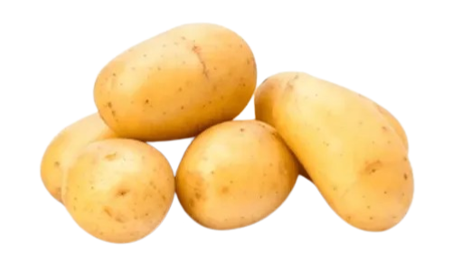

Papa Tradicional
Papa de textura firme y sabor suave, ideal para todo tipo de preparaciones. Perfectas para hervir, freír o hacer puré con un resultado siempre parejo.
Papa de textura firme y sabor suave, ideal para todo tipo de preparaciones. Perfectas para hervir, freír o hacer puré con un resultado siempre parejo.

Variedad distinguida por su piel fina y su pulpa firme. Mantiene su estructura incluso en cocciones prolongadas, ideal para guisos delicados, asados de precisión y técnicas de cocina profesional.

Una selección de origen andino caracterizada por su pigmentación natural y perfil aromático suave. Su textura harinosa permite elaboraciones elegantes como chips finos, mousselines o platos de autor.


Destacada por su tono singular y su consistencia estable. Diseñada para preparaciones donde la presentación y la firmeza son esenciales, como ensaladas gourmet, salteados precisos y cocina contemporánea.

Reconocida por su pulpa cremosa y su sabor naturalmente mantecoso. Es la base perfecta para purés sedosos, emulsiones suaves y acompañamientos de calidad superior.

Una pieza exclusiva seleccionada por su estética única y su equilibrio interno. Ideal para presentaciones sofisticadas, degustaciones de autor y propuestas gastronómicas que buscan destacar visual y sensorialmente.